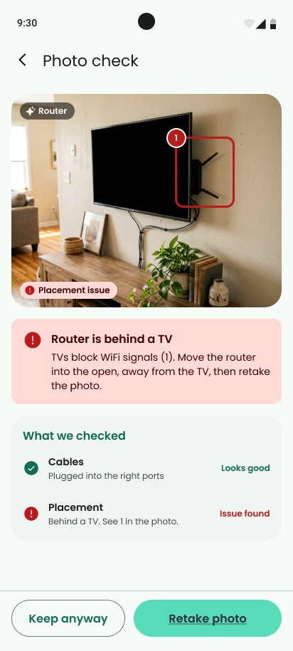
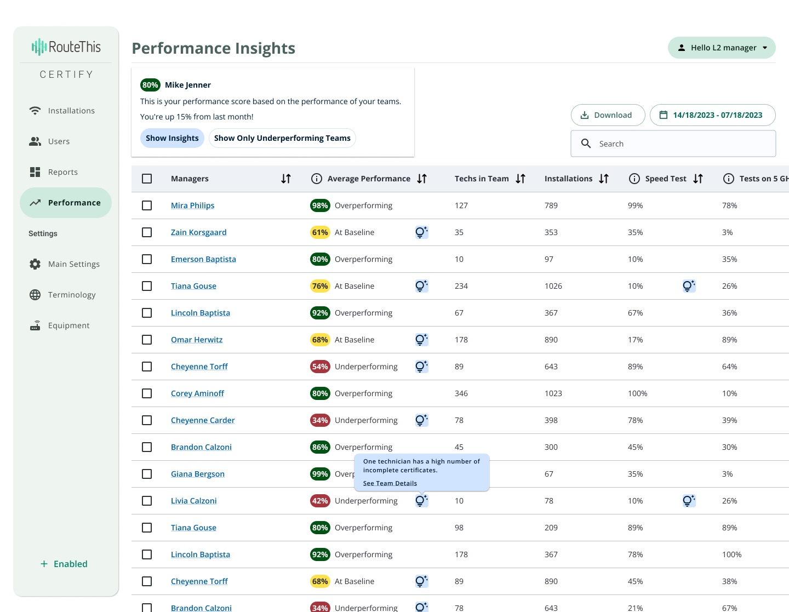
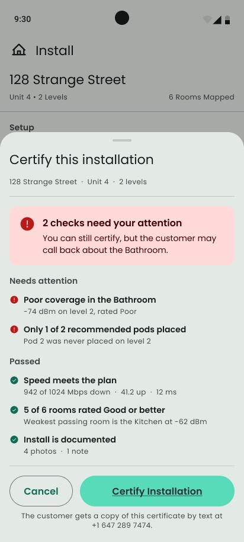

Certify: redesigning an install app around how technicians work
A multi-week redesign cycle cut to 2 days
A hub redesign of the Android app technicians use for WiFi installs, prototyped in working code in two days, and a certificate that Rava explains to the customer. Plus concepts for AI photo checks and a manager dashboard.
- Problem
- Technicians were forced through a locked, linear install flow, and managers had no clear view of install quality across thousands of technicians.
- My contribution
- Redesigned the flow as a hub, built a working Android version in two days to test it, designed how each install’s certificate reaches the customer through Rava, and designed concepts for AI photo checks and a manager dashboard.
- Impact
- A multi-week redesign cycle cut to 2 days. Internal testing has been positive so far, mostly surfacing bugs; testing with technicians is next.
TL;DR
Context
One install, three kinds of users
Every install produces a WiFi certificate. The technician creates it, the manager gets the technical version, and the customer gets theirs through Rava.
- Step 1Technician · Android app
Runs the install: router placement, speed test, coverage walk, photos.
- Step 2Confirm and certify
A summary of verdicts, not raw readings. Issues like a weak room or a missing pod are named and recorded.
- Step 3Managers · desktop dashboard
Get the technical certificate. L1 managers see their technicians; L2 managers see their L1 teams.
Concept - Step 4Customer · SMS or QR code
A link to their certificate leads them to install RouteThis Helps.
In design - Step 5Rava explains it
Walks the customer through their certificate, room by room, and helps fix what’s weak.
In design
The real problem
The flow was the bigger problem, not any one screen
The original Certify app was designed without user research. It forced every technician through the same locked, linear flow, whatever their experience. Interviews made the real problem clear: to change one thing, a technician had to go back through a long chain of screens and repeat steps they had already done.
Before: building selection to router placement, each screen with only Previous and Next.
My role & influence
Team
Sole designer, with a PM, a tech lead and a co-op developer I mentor from a UXD perspective.
What I did
Redesigned the flow as a hub, built a working Android version in two days to test it, designed how each install’s certificate reaches the customer through Rava, and designed concepts for AI photo checks and a manager dashboard.
Key decisions & tradeoffs
- One gateRouter placement is the only required step.
- Grouped by phaseSetup, Measure, Document.
- Independent progressFixing one tool doesn’t reset the others.
One gate, then seven tools in any order
- Context
- Technicians bring different levels of experience, and a locked sequence slowed down everyone who knew what they were doing.
- Decision
- One required step at router placement, then seven tools a technician can complete in any order, grouped by phase with independent progress.
- Why
- Each technician can work the way the job on site demands, and fixing one step no longer means redoing the others.
- MapOld journey vs. the hub
I mapped both journeys side by side.
- ConceptClaude + Figma
The map became a working hub screen.
- BuildRunning Android app
About two days, from Figma to a build people can test.
04.2
Build it, don’t mock it
- Decision
- I mapped the old journey and the hub, used Claude connected to Figma to turn the map into a working hub screen, then built a running Android version in about two days.
- Why
- Testing happens on real, working software instead of a click-through prototype, and a cycle that usually takes weeks took two days.
- Testing so far
- Internal testing with RouteThis employees: positive feedback, mostly bug finds. Testing with field technicians comes next.

1 2 3- Exactly what’s wrongMarked on the photo itself.
- How to fix itIn one plain sentence.
- “Keep anyway”The AI advises; the person on site makes the call.
Every install photo gets an AI check
- Context
- A bad install means a repeat visit. Catching a cable in the wrong port or a router behind a TV while the technician is still on site costs far less.
- Decision
- Check each photo as it’s taken, and say exactly what’s wrong and how to fix it.
- Why the AI never blocks
- Technicians can choose “Keep anyway”. The AI advises, and the person on site makes the call.
Show managers where to act, not just a score

1 2- A scoreTells a manager something is wrong.
- A flag and a sentenceTell them who to talk to.
- Context
- Managers oversaw thousands of technicians and installation certificates with no overall view of quality, so struggling technicians and training needs went unnoticed.
- Decision
- Score every technician on five install-quality metrics. If one technician is flagged on one metric, their L1 manager is flagged at the L2 level, even when the team is doing well overall. Plain-language AI insights explain what changed, such as “One technician has a high number of incomplete certificates.”
- Why
- A score alone tells managers something is wrong; a flag and a sentence tell them who to talk to.

1 2 3- Verdicts, not readingsEach issue named in words.
- Passed checksSummarized, not hidden.
- Certify anywayIssues are recorded, and the customer gets a copy by text.
Rava walks customers through their certificate
- Context
- A technician can certify an install even when a room is weak or a recommended pod wasn’t installed. A reading like −74 dBm means nothing to the person who lives there.
- Decision
- The technician’s summary states verdicts and names any issue. The customer gets an SMS with an invite to install RouteThis Helps, and Rava offers a guided walk-through or answers questions: the install details to confirm, speeds against their plan, then coverage floor by floor in plain words, such as “Email and browsing only”. Where a pod was recommended but never installed, Rava says so and offers to help order one.
- Why
- It applies the lesson from Rava’s coverage tool, verdicts instead of raw readings, and makes the end of an install the customer’s first conversation with Rava. Chat mode 03.2
In design: Rava walking the customer through the certificate.
Outcome
Headline result
2 days
from Figma to a working Android build, down from a multi-week cycle
Positive so far, mostly bug finds; technician testing is next.
Technician summary, SMS invite and Rava walk-through.
At concept stage.
Remained a concept.
Reflection
What I learned about designing with AI
- I get better results from AI when I give it a clear goal for each tool, rather than a description of the tool.
- AI saves real time on housekeeping and documentation in design files.
- Quality checks and audits can and should be automated.